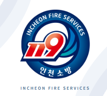

<!doctype html><html lang="ko"><meta charset="utf-8"><meta name="viewport" content="width=device-width,initial-scale=1"><title>인천소방 · 전술 AI</title><style>
*{box-sizing:border-box}body{margin:0;background:#eaf0f5;font-family:Pretendard,'Segoe UI',sans-serif;color:#142238}button,textarea{font:inherit}button{cursor:pointer}header.web{position:absolute;left:5vw;top:5vh}header.web small{letter-spacing:.2em;color:#77899b}header.web h1{font-size:26px;margin:12px 0}header.web p{color:#6d7d8f;font-size:14px}.phone{width:402px;height:min(850px,94vh);margin:3vh auto;border:9px solid #202933;border-radius:44px;overflow:hidden;position:relative;background:#061224;box-shadow:0 35px 90px #25405a35;color:white}.status{position:absolute;top:0;left:0;right:0;padding:17px 24px;display:flex;justify-content:space-between;font-size:12px;z-index:4}.brand{position:absolute;top:65px;left:24px;display:flex;align-items:center;gap:10px;z-index:3;font-weight:700}.brand img{width:36px;border-radius:50%}.scene{position:absolute;inset:0;overflow:hidden;transition:background 1s}.glow{position:absolute;inset:0;background:radial-gradient(ellipse at 50% 57%,#07519b88,transparent 65%);animation:breathe 2s infinite}.trails{position:absolute;left:-20%;width:140%;height:65%;bottom:2%;filter:drop-shadow(0 0 7px #158cff);opacity:.7}.trails path{fill:none;stroke-width:2;stroke-dasharray:600 180;animation:flow 9s linear infinite}.center{position:absolute;top:25%;left:24px;right:24px;text-align:center}.eyebrow{color:#81b8e1;font-size:12px;letter-spacing:.18em}.center h2{font-size:25px;letter-spacing:-.04em;margin:16px 0 28px}.mic{width:112px;height:112px;margin:auto;display:grid;place-items:center;border-radius:50%;background:#1486ff12;box-shadow:0 0 50px #188aff33}.mic svg{width:53px;height:53px;stroke:#a9e5ff;filter:drop-shadow(0 0 10px #259bff)}.digits{font-size:76px;font-weight:650;letter-spacing:-.06em;margin-top:20px}.caption{color:#a4c0db;font-size:14px}.bottom{position:absolute;bottom:42px;left:24px;right:24px;text-align:center}.btn{border:1px solid #ffffff30;background:#ffffff0c;color:inherit;border-radius:15px;padding:15px 20px;min-height:50px}.bottom .btn{width:100%}.recorddot{display:inline-block;width:6px;height:6px;border-radius:50%;background:#ff7175;margin-right:8px}.splash{position:absolute;inset:0;z-index:6;background:#061224;display:grid;place-content:center;text-align:center;animation:depart .7s 2.7s forwards}.emblem{position:relative;width:194px;height:194px;display:grid;place-items:center}.emblem img{width:124px;border-radius:50%;z-index:1}.emblem:before{content:'';position:absolute;inset:0;border-radius:50%;border:2px solid #7edbff;border-top-color:white;box-shadow:0 0 30px #208fff66;animation:arrive 2.4s ease both}.splash p{font-size:17px;margin-top:28px}.splash small{color:#6998bf;letter-spacing:.2em;font-size:10px}textarea{width:100%;height:175px;background:#ffffff0d;border:1px solid #7ba1c655;border-radius:20px;color:white;padding:22px;font-size:23px;line-height:1.6;resize:none;outline:none}.light .glow,.light .trails{display:none!important;animation:none!important}.light{background:#f7f9fc;color:#182638}.light .brand{top:58px}.answer{position:absolute;inset:115px 0 0;overflow:auto;padding:20px 24px 40px;font-size:18px;line-height:1.85}.bubble{background:#e3edfc;border-radius:22px 22px 4px 22px;padding:16px 20px;margin:0 0 30px 22px;font-size:16px}.answer h3{font-size:20px;margin:24px 0 10px}.cite{display:inline-grid;place-items:center;border:1px solid #287bd3;background:#eaf3ff;color:#226bc0;border-radius:50%;width:29px;height:29px;margin-left:5px;font-size:15px}.popover{position:absolute;z-index:10;left:20px;right:20px;bottom:75px;background:white;color:#182638;padding:24px;border-radius:20px;box-shadow:0 12px 60px #0c254844;font-size:15px;line-height:1.7}.popover button{float:right;border:0;background:#eef3f7;border-radius:50%;width:30px;height:30px}.popover small{color:#7b8999}.controls{position:fixed;right:4vw;bottom:5vh;display:flex;flex-direction:column;gap:9px}.controls button{border:1px solid #d1dce6;background:white;color:#50667e;border-radius:12px;padding:12px 18px}.controls small{text-align:center;color:#8997a5;font-size:11px}[hidden]{display:none!important}@keyframes breathe{50%{opacity:.4}}@keyframes flow{to{stroke-dashoffset:-780}}@keyframes arrive{from{transform:rotate(-200deg) scale(.6);opacity:0}65%{opacity:1}to{transform:rotate(0) scale(1)}}@keyframes depart{to{opacity:0;visibility:hidden;transform:scale(1.08)}}@media(max-width:850px){header.web{display:none}.controls{position:static;flex-direction:row;justify-content:center;flex-wrap:wrap;margin:20px}.controls small{width:100%}}@media(max-width:450px){.phone{width:100%;height:100dvh;border:0;border-radius:0;margin:0}.controls{margin:15px}}@media(prefers-reduced-motion:reduce){*{animation-duration:.01ms!important;animation-iteration-count:1!important}}
</style><link rel="stylesheet" href="cinematic.css?v=19"><header class="web"><small>INCHEON FIRE SERVICE</small><h1>현장의 질문에,<br>근거 있는 답을.</h1><p>스마트 전술 시스템 · 인터랙티브 목업</p></header><main class="phone"><div class="scene" id="scene"><div class="glow" id="glow"></div><svg class="trails" id="trails" viewBox="0 0 500 600"><path stroke="#168dff" d="M-50 580 C600 420 -180 310 550 110"/><path stroke="#ff655c" d="M550 590 C-100 450 680 300 -40 200"/></svg><div class="status"><b>9:41</b><span>▰ ▰ 84%</span></div><div class="brand"><span id="title">스마트 전술 AI</span></div><div id="content"></div><div class="splash" id="splash"><div class="emblem"></div><p>스마트 전술 시스템</p><small>READY FOR YOUR VOICE</small></div></div><aside class="popover" id="source" hidden><button onclick="closeSource()" aria-label="닫기">×</button><b>출처 미리보기 <span id="sourceNo"></span></b><p>전술 자료 · 시연용 문서</p><small>본문과 연결되는 문서명, 페이지와 인용 구절을 이곳에서 확인합니다. 현재 문서는 화면 시연용 예시입니다.</small></aside></main><nav class="controls" aria-label="시연 단계">
<div class="control-heading"><small>실행 타임라인 · 6 PHASES</small><b>질문에서 전술 답변까지</b><span>앱 실행 후 경과 시간 기준 · 단계를 누르면 해당 화면으로 이동</span></div>
<button class="step-control active" onclick="runDemoStep(1)"><i>01</i><span><b>앱 실행 · 로고 인트로</b><small>시작 영상 5.8초 후 스마트폰과 로고 인트로 5초가 이어집니다.</small><time>00:00 — 00:10.8 · 시작 영상 + 로고</time></span><em>›</em></button>
<button class="step-control" onclick="runDemoStep(2)"><i>02</i><span><b>음성 질문 · 10초 녹음</b><small>배경 영상과 마이크 타이머가 이어집니다.</small><time>00:10.8 — 00:20.8</time></span><em>›</em></button>
<button class="step-control" onclick="runDemoStep(3)"><i>03</i><span><b>음성 인식 처리</b><small>녹음한 음성을 문장으로 변환합니다.</small><time>00:20.8 이후 · 처리 시간</time></span><em>›</em></button>
<button class="step-control" onclick="runDemoStep(4)"><i>04</i><span><b>인식 문장 확인 · 수정</b><small>질문을 확인합니다. 수정하는 동안 전송 카운트가 멈춥니다.</small><time>인식 완료 후 · 5초 대기</time></span><em>›</em></button>
<button class="step-control" onclick="runDemoStep(5)"><i>05</i><span><b>자동 전송 · 자료 확인</b><small>대기 종료 후 질문을 보내고 관련 자료를 확인합니다.</small><time>전송 직후 · 처리 중</time></span><em>›</em></button>
<button class="step-control" onclick="runDemoStep(6)"><i>06</i><span><b>AI 전술 답변 · 출처 확인</b><small>답변 문장 옆 번호를 눌러 출처를 엽니다.</small><time>답변 생성 완료</time></span><em>›</em></button>
<button class="effect-next" onclick="playEffectVideo()">기대효과 <span>▶</span></button></nav><script>
const $=id=>document.getElementById(id);let jobs=[],editing=false;let question='11층 건물 키즈카페, 연기가 많이 나고 있다. 어디에서 연기가 나고 있는지 모르겠다.';const mic='<svg viewBox="0 0 24 24" fill="none" stroke-width="1.5" stroke-linecap="round"><rect x="9" y="2" width="6" height="13" rx="3"/><path d="M5 10v2a7 7 0 0 0 14 0v-2M12 19v3m-4 0h8"/></svg>';function reset(light=false){jobs.forEach(clearTimeout);jobs=[];closeSource();$('scene').classList.remove('recording');document.querySelector('.mic-bg-video')?.remove();$('scene').classList.toggle('light',light);$('glow').hidden=light;$('trails').hidden=light;$('splash').hidden=true;$('title').textContent=light?'AI 전술 답변':'스마트 전술 AI'}function later(fn,ms){jobs.push(setTimeout(fn,ms))}function countdown(n,draw,done){draw(n);if(n>0)later(()=>countdown(n-1,draw,done),1000);else done()}function intro(){reset();$('content').innerHTML='';const old=$('splash'),fresh=old.cloneNode(true);old.replaceWith(fresh);fresh.hidden=false;later(record,3400)}function record(){reset();$('scene').classList.add('recording');$('content').innerHTML='<video class="mic-bg-video" src="mic-background.mp4" autoplay muted playsinline></video><div class="center"><div class="eyebrow">VOICE INPUT</div><h2>질문을 말씀해 주세요</h2><div class="mic">'+mic+'</div><div class="digits" id="seconds">10</div><div class="caption">초 남음</div></div><div class="bottom"><p class="caption"><i class="recorddot"></i>듣고 있어요</p><button class="btn" onclick="recognize()">말하기 완료</button></div>';countdown(10,n=>$('seconds').textContent=n,recognize)}function recognize(){reset();$('content').innerHTML='<div class="center"><div class="mic">'+mic+'</div><h2>말씀을 정리하고 있어요</h2><p class="caption">잠시만 기다려 주세요</p></div>';later(transcript,1300)}function transcript(){reset();editing=false;$('content').innerHTML='<div class="center"><div class="eyebrow">VOICE CAPTURED</div><h2>이렇게 말씀하셨나요?</h2><textarea id="question" aria-label="인식 문장 수정"></textarea><p class="caption" id="sendStatus"></p><button class="btn" id="done" hidden onclick="resume()">수정 완료</button></div><div class="bottom"><button class="btn" onclick="cancel()">전송 취소</button></div>';$('question').value=question;$('question').addEventListener('focus',()=>{jobs.forEach(clearTimeout);jobs=[];editing=true;$('done').hidden=false;$('sendStatus').textContent='수정 중 · 자동 전송 일시 정지'});sendTimer()}function sendTimer(){countdown(5,n=>$('sendStatus').textContent=n+'초 후 자동 전송됩니다',()=>{question=$('question').value.trim()||question;loading()})}function resume(){question=$('question').value.trim()||question;$('question').blur();$('done').hidden=true;editing=false;sendTimer()}function cancel(){reset();$('content').innerHTML='<div class="center"><div class="mic">'+mic+'</div><h2>전송을 취소했어요</h2><p class="caption">준비되면 다시 말씀해 주세요.</p><button class="btn" onclick="record()">다시 녹음</button></div>'}function loading(){reset();$('content').innerHTML='<div class="center"><div class="mic">'+mic+'</div><h2>관련 자료를 살펴보고 있어요</h2><p class="caption">질문에 맞는 내용을 정리합니다</p></div>';later(answer,1800)}function answer(){
reset(true);
$('content').innerHTML=`<article class="answer"><div class="bubble" id="bubble"></div>
<h3>1. 1경방 대원 단계별 행동요령</h3>
<h3>① 1단계: 현장 도착 즉시 인명 정보 청취 및 피난 유도</h3>
<p>• <strong>인명 정보 우선 수집</strong>: 현장 도착 즉시 건물 관계자나 대피자로부터 <strong>대피 지연자(어린이·요구조자) 유무, 위치, 인원</strong>을 최우선으로 청취하여 진입 방향을 결정합니다. <button class="cite" onclick="source(5)">5</button> <button class="cite" onclick="source(6)">6</button></p>
<p>• <strong>계단실 대피 통제</strong>: 계단실로 대피 중인 인원이 있을 경우 연기 유입을 막기 위해 <strong>화점층 계단실 방화문을 일단 폐쇄</strong>하고, 안전한 아래층으로 대피하도록 유도합니다. <button class="cite" onclick="source(16)">16</button></p>
<h3>② 2단계: 2~3층 직하층 거점 확보 및 진입</h3>
<p>• <strong>안전 하차 및 거점 확보</strong>: 승강기 이용 시 <strong>화재층 2~3층 아래에서 하차</strong>하여 계단으로 이동하고, 특별피난계단 부속실에 거점을 확보합니다. <button class="cite" onclick="source(12)">12</button></p>
<p>• <strong>연결송수관 호스 연장</strong>: 거점의 연결송수관 방수구(또는 옥내소화전)에 호스를 연결하고 <strong>수압이 가압된 것을 확인한 후 진입</strong>합니다. <button class="cite" onclick="source(13)">13</button> <button class="cite" onclick="source(14)">14</button></p>
<h3>③ 3단계: 2인 1조 진입, 농연 속 인명검색 및 화점 역추적</h3>
<p>• <strong>퇴로 확보 및 2인 1조 진입</strong>: <strong>2인 1조로 안전로프(생명로프)를 결착</strong>하여 진입하며, 방화문 통과 시 쐐기(빗장)로 개구부를 고정해 퇴로를 확보합니다. <button class="cite" onclick="source(12)">12</button></p>
<p>• <strong>TIC 활용 및 숨겨진 공간 수색</strong>: 자세를 낮추고 <strong>열화상 카메라(TIC)</strong>를 활용하여 복도, 주방 덕트, 천장 속(전선·마감재), 화장실 등 요구조자 다발 장소와 화점을 역추적합니다. <button class="cite" onclick="source(8)">8</button></p>
<p>• <strong>잠긴 문 최우선 수색</strong>: 대피자는 보통 문을 열어둔 채 탈출하므로, <strong>잠겨 있는 실 내부</strong>에 요구조자가 갇혀 있을 가능성을 염두에 두고 강제개방 및 수색을 실시합니다. <button class="cite" onclick="source(16)">16</button></p>
<h3>④ 4단계: 문 개방, 엄호방수 및 화세 제압</h3>
<p>• <strong>측면 위치 및 엄호방수</strong>: 화점실 문 개방 전 손등으로 열기를 확인하고, 백드래프트에 대비하여 <strong>문 측면에 위치한 상태에서 엄호방수를 실시하며 개방</strong>합니다. <button class="cite" onclick="source(2)">2</button> <button class="cite" onclick="source(3)">3</button></p>
<p>• <strong>천장 직사방수 후 진압</strong>: 진입 직전 천장에 직사주수하여 낙하물과 상층 열기를 제압한 뒤 내부로 진입해 화점에 방수합니다. <button class="cite" onclick="source(2)">2</button></p>
<h3>2. 상황별 무전 교신 예시</h3>
<p><strong>진입 시 무전</strong><br>“청라지휘, 청라1경방! 11층 진입 거점 확보 완료. 요구조자 수색 및 화점 탐색 위해 내부 진입한다!”</p>
<p><strong>화점 및 요구조자 발견 시 무전</strong><br>“청라지휘, 청라1경방! 11층 키즈카페 안쪽 주방 덕트 인근 화점 발견! 요구조자(어린이 2명) 확인, 구조대 즉시 지상 수송 지원 바람!”</p>
<p><strong>진압 및 후속 조치 무전</strong><br>“청라지휘, 청라1경방! 화점실 방수 개시하여 화세 꺾었음. 계단실 방화문 통제 중, 후착대 연결송수관 추가 가압 바람!”</p>
<h3>3. 챙겨야 할 장비</h3>
<p>• <strong>개인보호장구</strong>: 방화복(지퍼·벨크로 완전 착용), 안전모(무선송수신장치), 양압식 공기호흡기(등지게·면체·인명구조경보기 ON), 방화장갑, 안전화</p>
<p>• <strong>소화·진입 장비</strong>: 소방관창 1본, 소방호스 2본, 방화문 고정용 쐐기(빗장)</p>
<p>• <strong>탐색·파괴 장비</strong>: 열화상 카메라(TIC), 강제진입도구(도끼·할리건 툴)</p>
<p>• <strong>통신·안전 장비</strong>: 휴대용 무전기, 조명기구(라이트), 안전로프(생명로프)</p>
<p class="answer-note">발표용 예시 화면입니다. 실제 활동은 현장 지휘와 해당 기관의 승인된 절차를 따릅니다.</p>
<button class="btn" style="background:#e8f1fe;color:#236bcc;width:100%" onclick="record()">새 질문하기</button></article>`;
$('bubble').innerHTML=question+' <span class="preset-context">나는 청라센터 1경방 · 행동요령 · 무전 예시 · 챙겨야 할 장비 (사전설정)</span>';
};
function source(n){$('sourceNo').textContent='['+n+']';$('source').hidden=false}function closeSource(){$('source').hidden=true}document.addEventListener('keydown',e=>{if(e.key==='Escape')closeSource()});intro();
</script><script src="cinematic.js"></script><script src="video-intro.js"></script><script src="demo-steps.js"></script><script src="presentation.js?v=17"></script><script src="effects.js?v=21"></script></html>
